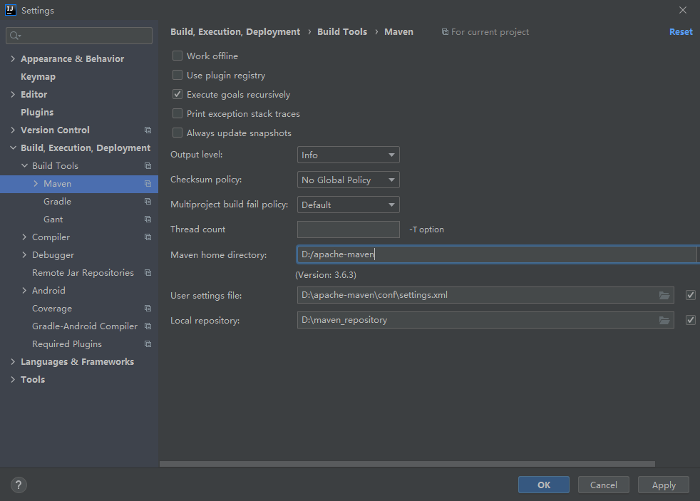

Maven基础概念
Project:任何你想构建的事务Maven都可以认为它们是工程，这些工程被定义为工程对象模型（project Object Model POM） 一个工程可以依赖其他的工程，一个工程也可以由多个子工程构成
POM：POM(pom.xml) 是Maven 的核心文件，它是只是Maven如何工作的元数据文件。POM文件位于每个工程的根目录中。
GroupId:GroupId是一个工程在全局中的唯一标识符，一般地，他就是工程名，GroupId有利于使用一个完全的包名将一个工程从其他有类似名称的工程中区别出来。
Artifact:中文名为”构件”,是工程将要生产或需要使用的文件，它可以是.jar文件,源文件，二进制文件，.war文件，甚至是.pom文件。每个Artifact都要放在仓库（Repository）中，否则Maven无法找到它们。
Dependency：为了能够构建或运行,一个典型的Java工程都会依赖其他的包，在Maven中,这些被依赖的包就被称为Dependency。Dependency一般是其他工程的Artifact。
Plug-in: 可以说Maven就是一堆插件的集合，它的每一个功能都是由插件完成的，插件提供goal(类似于Ant中的target),并根据在POM中找到的元数据去完成工作。主要的Maven插件是由Java编写而成的，同时支持用beanshell或Ant脚本编写的插件。
Repository:仓库，即放置Artifact的地方，有中央仓库，公共仓库，私有仓库及本地仓库之分。为了提高Artifact的下载速度，一般情况下，公司或开发者组织都需要部署一个私有仓库，可以使用Nexus创建Maven私有仓库。
如何应用
在IDEA中设置maven，特别注意Maven的安装地址。
根据个人的设置不同选择相应的Setting文件和仓库地址

setting.xml 设置
为了更快地访问到maven中引用的库，那么需要修改镜像源。如下提供的是阿里云的镜像源设置方法，将这段代码拷贝到原有的setting.xml文件中即可。
1 | <mirrors> |
参考资料
如果您觉得上面的内容对您有帮助欢迎点赞、评论、转发！
更多内容请查阅作者博客：https://jiaruiblog.com
或者star作者github: https://github.com/Jarrettluo?tab=repositories